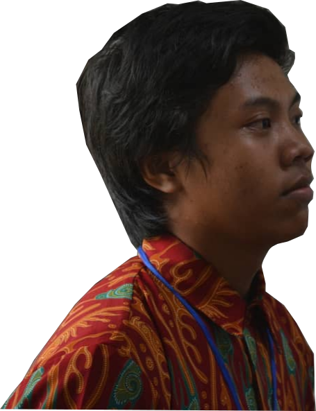

{Hello!;}
My name is
Danang Wijaya. I was born in Sleman, 25 June 2000.
I live in Semoya, RT 004, RW 035, Tegaltirto, Berbah, Sleman, Special Region of Yogyakarta.
My Hobbies is Riding the bycycle or motorcycle. My routines are Studying at Yogyakarta State University, Coding, and Developing.
"Talk Is Cheap, Show Me The Code!"
-Linus Torvalds-
I live in Semoya, RT 004, RW 035, Tegaltirto, Berbah, Sleman, Special Region of Yogyakarta.
My Hobbies is Riding the bycycle or motorcycle. My routines are Studying at Yogyakarta State University, Coding, and Developing.
Software Engineer
"Talk Is Cheap, Show Me The Code!"
-Linus Torvalds-
Educations
University
Yogyakarta State University (Education of Informatics Engineering)Vocational High School
SMK N 2 Yogyakarta (Computer And Network Engineering)Junior High School
SMP N 2 Berbah, SlemanElementary School
SD N Jomblang 2
Achievement
1st FIKS SMK Yogyakarta 2016 (Software Creation)
2nd FIKS SMK Special Region of Yogyakarta 2017 (Software Creation)
1st LKS SMK Special Region of Yogyakarta 2017 (IT Software Solutions for Business)
Medallion for Excellent (MfE) LKS SMK-26 2018 (IT Software Solutions for Business)
Here link of my certificates
2nd FIKS SMK Special Region of Yogyakarta 2017 (Software Creation)
1st LKS SMK Special Region of Yogyakarta 2017 (IT Software Solutions for Business)
Medallion for Excellent (MfE) LKS SMK-26 2018 (IT Software Solutions for Business)
Here link of my certificates